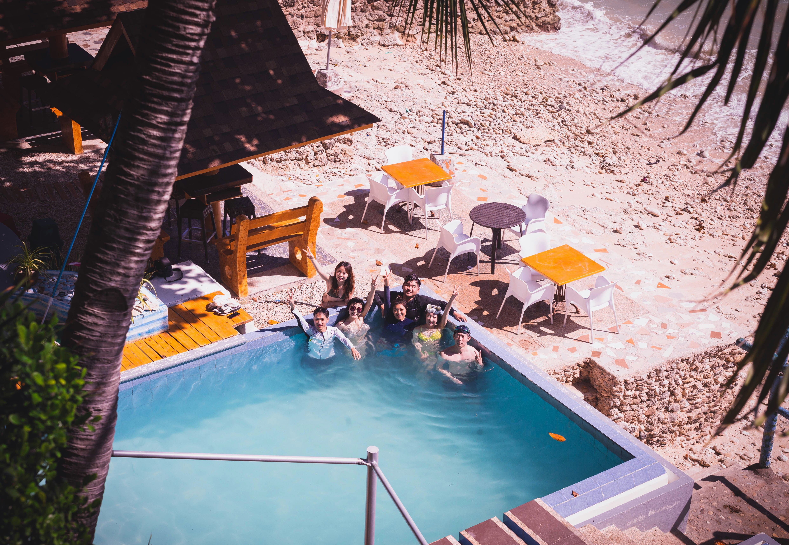
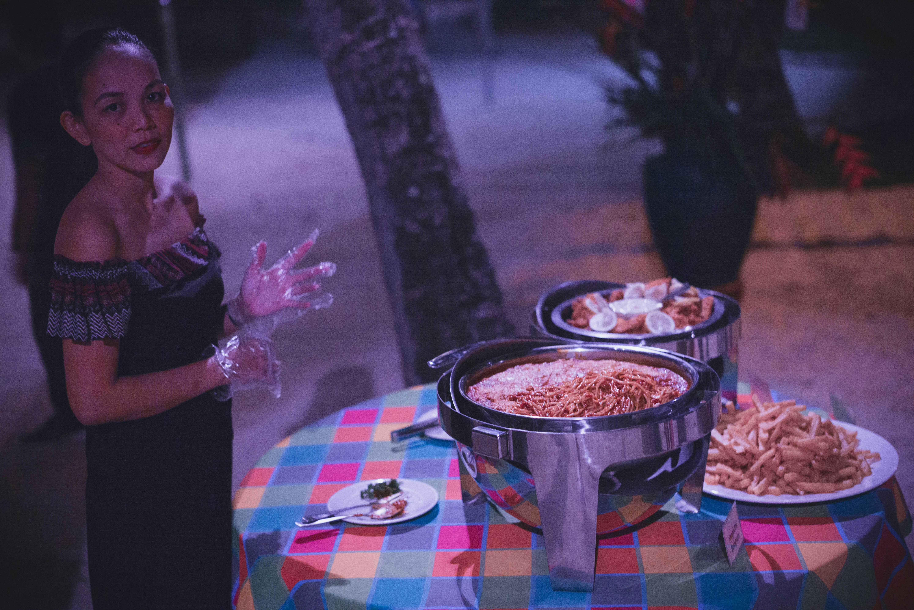

BEAUTY OF THE ISLAND
Often called the "Mystic Island of the Philippines," Siquijor enchants travelers with its ethereal blend of pristine turquoise beaches, centuries-old Spanish heritage, and lush, jungle-clad highlands steeped in local folklore.
A better way to experience the island of Siquijor.
Activities
From swinging over the turquoise tiers of Cambugahay Falls to taking a daring leap from the white limestone cliffs of Salagdoong Beach, enjoying Siquijor means embracing a perfect balance of adrenaline-pumping thrills and serene, sunset-filled relaxation.
Scenery
Basking in the scenery of Siquijor means witnessing a vibrant landscape where the "Gatorade-blue" waters of Cambugahay Falls contrast against deep jungle greens and the horizon ignites with world-class violet and orange sunsets over the powdery shores of Paliton Beach.
Delicacies
Enjoying the local food in Siquijor is a sensory journey that pairs the island's famous sunset views with authentic flavors, from the zesty, fresh-off-the-boat seafood of a traditional Sutukil feast to the sweet, anise-scented warmth of a freshly baked Torta cake.
Traditional Festival
Experiencing a traditional festival in Siquijor is a vibrant immersion into the island's soul, whether you are dancing at the Dilaab Festival to celebrate the island's "fire" and hospitality or witnessing the mystical gathering of healers during the Folk Healing Festival at Mt. Bandilaan every Holy Week.
THE BEAUTY OF SIQUIJOR

Enjoying the beaches in Siquijor is a serene escape where you can lounge on the powdery white sands of Paliton Beach while watching the horizon ignite with a world-class violet sunset or snorkel through the vibrant, crystal-clear coral gardens of the Tubod Marine Sanctuary.

Partying in Siquijor is a magical experience that transforms the quiet island into a vibrant social hub, where you can dance under the stars at beachfront fire shows in San Juan or join the locals for a lively town fiesta filled with music, laughter, and community spirit.

Eating local food in Siquijor is a sensory delight that blends the island's mystical charm with fresh, vibrant flavors, such as the signature Torta sponge cake, the savory Sutukil seafood feast, and the sweet, coconut-filled Pan Bisaya bread.